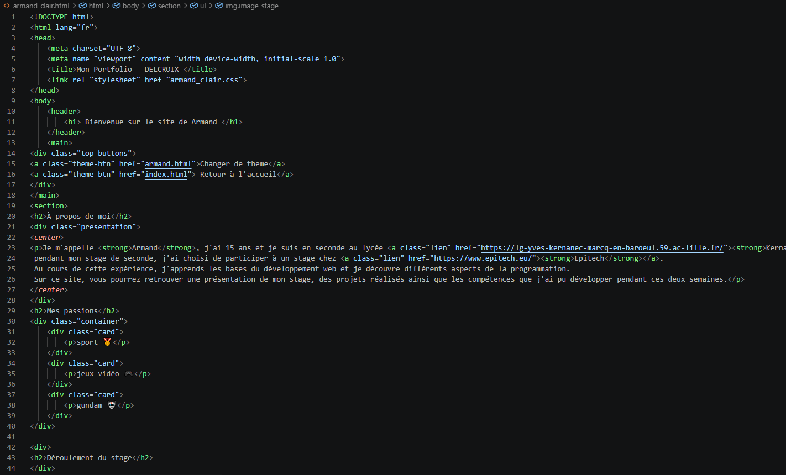
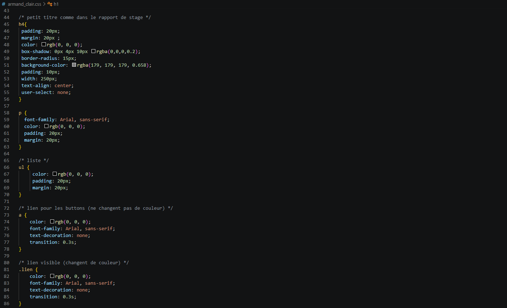
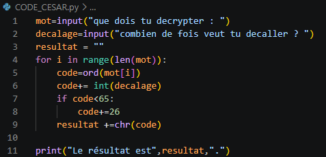
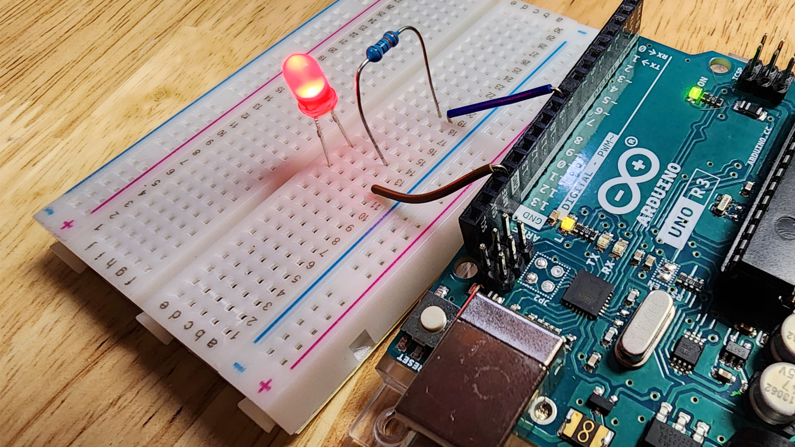

À propos de moi
Je m'appelle Armand, j'ai 15 ans et je suis en seconde au lycée Kernanec à Marcq-en-Barœul. pendant mon stage de seconde, j'ai choisi de participer à un stage chez Epitech. Au cours de cette expérience, j'apprends les bases du développement web et je découvre différents aspects de la programmation. Sur ce site, vous pourrez retrouver une présentation de mon stage, des projets réalisés ainsi que les compétences que j'ai pu développer pendant ces deux semaines.
Mes passions
sport 🥇
jeux vidéo 🎮
gundam 🤖
Déroulement du stage
Semaine 1
- jour 1 : Découverte
- jour 2 : cybersécurité/OSINT
- jour 3 : IA/Algorithmie
- jour 4 : "aprendre à aprendre"/Arduino
- jour 5 : distanciel
Cette première journée nous a permis de connaître le déroulement du stage.
La première activité a été un "Icebreaker". Nous avons donc joué au jeu "Top Ten". Ce jeu avait pour but d'apprendre à connaître nos camarades.
Ensuite, dans la deuxième partie de la matinée, nous avons, avec l'aide des étudiants présents, installé tous les logiciels qui seront utilisés lors du stage, comme VS Code, Python, Arduino et quelques autres.
L'après-midi, on nous a fait découvrir le projet qui allait nous occuper durant tout le stage : le portfolio. Nous avons donc pris connaissance du sujet et commencé à coder en apprenant les bases du HTML et du CSS.


Lors de cette deuxième journée, nous avons commencé par une conférence sur la cybersécurité animée par un hacker éthique. Nous avons découvert son métier, qui consiste à rechercher des failles de sécurité afin d'aider les entreprises à mieux protéger leurs systèmes informatiques. L'intervenant nous a montré plusieurs démonstrations permettant de comprendre comment certaines attaques peuvent être réalisées sur des sites web mal sécurisés. J'ai notamment appris le rôle des cookies et pourquoi il est important de les protéger. L'après-midi, nous avons participé à une activité d'OSINT. Nous avons utilisé GeoGuessr, un jeu dans lequel il faut retrouver un lieu à partir d'images. Cette activité nous a permis de comprendre qu'il est parfois possible de retrouver beaucoup d'informations grâce à de simples indices visibles sur Internet. J'ai trouvé cette activité très intéressante car elle montre l'importance de protéger ses informations personnelles. Lors d'une activité de type CTF (Capture The Flag), nous devions retrouver le système de chiffrement utilisé pour décoder différents mots de passe. Nous avons notamment travaillé sur le code de César et découvert plusieurs méthodes de chiffrement utilisées en informatique.

Cette journée a débuté par une conférence consacrée à l'intelligence artificielle. Nous avons découvert différents domaines de l'informatique dans lesquels elle est utilisée ainsi que son fonctionnement général. Cette présentation m'a permis de mieux comprendre l'importance grandissante de l'IA dans notre quotidien. L'après-midi, nous avons travaillé sur l'algorithmie à travers plusieurs activités. Nous avons notamment participé à « Poké Poireau », un jeu dans lequel il fallait programmer le comportement d'un personnage afin qu'il agisse automatiquement. Nous avons également utilisé Python pour recréer un chiffrement de César.

Le matin, nous avons assisté à une conférence sur les méthodes d'apprentissage et la manière de progresser plus efficacement. Nous avons parlé de l'organisation, de la mémorisation et de l'autonomie, des qualités importantes pour réussir dans les études et dans les métiers de l'informatique. Nous avons ensuite réalisé l'activité « Canard ». À l'aide de briques LEGO, nous devions résoudre différents problèmes en équipe. Cette activité avait pour objectif de nous faire réfléchir à la logique et à la façon dont il faut communiquer des consignes précises. L'après-midi, nous avons découvert Arduino. Nous avons réalisé un petit montage électronique et programmé l'allumage de LED à distance. J'ai trouvé intéressant de melangé le hardware et software.

Cette journée s'est déroulée à distance. Le matin, nous avons assisté à une conférence sur l'intelligence artificielle. Les intervenants nous ont montré qu'il est aujourd'hui possible de créer rapidement des sites web grâce à certains outils basés sur l'IA. Cependant, ils nous ont également expliqué que ces outils ne remplacent pas la créativité et la personnalisation apportées par un développeur. L'après-midi, nous avons continué à travailler sur notre portfolio personnel.
semaine 2
- jour 1 : suite du projet
- jour 2 : IA
- jour 3 : cybersécurité/Java Script
- jour 4 : distanciel
- jour 5 : forum
Pour commencer la deuxième semaine, nous avons assisté à plusieurs témoignages d'étudiants d'Epitech. Ils nous ont présenté différents projets qu'ils ont réalisés au cours de leur anneé. Cela nous a permis de découvrir des réalisations variées et de mieux comprendre la pédagogie de l'école, qui repose beaucoup sur la pratique et les projets. L'après-midi, nous avons poursuivi le développement de notre portfolio. J'ai continué à améliorer le design de mon site.
Lors de cette journée, nous avons participé à une activité nommée "NASA". Nous devions classer plusieurs objets selon leur utilité dans une situation de survie sur la Lune. Cet exercice avait pour objectif de développer notre réflexion, notre logique et notre capacité à travailler en équipe. Après avoir réalisé le classement individuellement, nous avons comparé nos réponses avec celles recommandées par la NASA. L'après-midi, nous avons travaillé sur la création d'une intelligence artificielle capable de jouer au morpion.
Le matin, nous avons assisté à une conférence sur les métiers du jeu vidéo. Nous avons découvert les différentes professions qui interviennent dans la création d'un jeu, comme les développeurs, les graphistes, les testeurs ou encore les chefs de projet. Cette présentation nous a permis de mieux comprendre l'organisation nécessaire pour réaliser un jeu vidéo. L'après-midi, nous avons commencé à recréer le jeu Snake en JavaScript. Cette activité nous a permis de découvrir un nouveau langage de programmation.
Cette journée s'est déroulée à distance. Une grande partie de la journée a été consacrée à l'avancement de notre portfolio personnel. Nous avons également assisté à une conférence sur l'orientation. Les intervenants nous ont présenté différentes possibilités d'études après le lycée ainsi que plusieurs parcours dans le domaine de l'informatique.
Cette dernière journée était consacrée au forum de présentation. Nous avons présenté notre portfolio aux parents et aux visiteurs présents. J'ai pu expliquer les différentes activités réalisées pendant le stage et les compétences que j'ai développées au cours de ces deux semaines. Nous avons également partagé un goûter ensemble pour célébrer la fin du stage. Enfin, nous avons reçu un diplôme pour marquer la fin du stage chez Epitech.